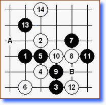
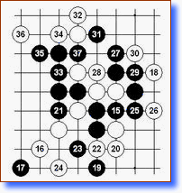
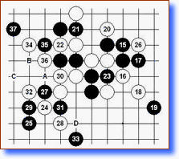
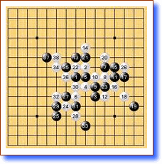

第十届世锦赛A组预选赛对局点评（一）
#1 第十届世锦赛A组预选赛对局点评（一） 作者：有志青年 发表时间：2007-8-8 21:02:28
总算看到A预的棋谱了，虽然不全但有总比没有好。这盘棋的主角上届世锦赛我也点评过她的对局（见中国连珠网 http://www.rifchina.com/Article/ShowArticle.asp?ArticleID=2695），两年的时间今天再看，并未看到她的棋风有什么改变。下面来看下实战进程。
实战进程一：

Yulia流星开局，白方避开流行的A点意图绕开对手的熟套。同时，也展现出积极的态度毕竟预选赛和棋没有出路。黑5时白6棋形要点，黑7含蓄的一手。白8选择比较多，实战的8此局面下常见。9时白10坚实防，黑11局部进攻要点，12最强防！13好棋！声东击西。14似好实坏，看似追求效率的一手其实确实败招！
参考图：

黑15间不容发，16先冲再防反而弱。19冷静的全局呼手白无解。如16－18，17－16！黑也胜。篇幅所限不一一列举了，有兴趣大家可以拆解下。
实战进程二：

15错过机会，17看似凶狠其实白棋简单化解黑无趣。黑棋的问题是太拘泥于局部攻防，一旦局部攻击受阻往往是后半盘被动的开始。反观白棋16手后防守的很好，白棋的耐心终于得到回报。黑31败招，黑棋的正确下法是先32位，白防上后再下A，如此局面趋向和棋。实战32时黑如防C位，白33后D简单必胜。33无奈，34正确，36一手棋将胜局断送，可惜！36－B，黑无解。也许是黑白双方都受到时限问题，而影响了正确的计算和判断吧，36错过机会后双方和棋。
总谱：
